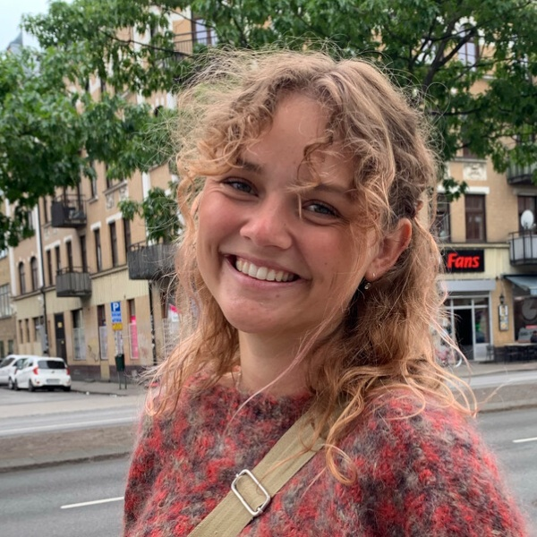

Alma Lennartsson
Biomedical Engineering
Master student (2025–2026)
Catarina Barreiros
Biomedicine
Bachelor thesis (2024-2025)
Emma Volcov
Biomedicine
Bachelor thesis (2024-2025)
Malo Gicquel
Engineering Mathematics
Master student (2024-2025)
Ruizhen Shen
Machine Learning, Systems and Control
Master thesis (2024-2025)